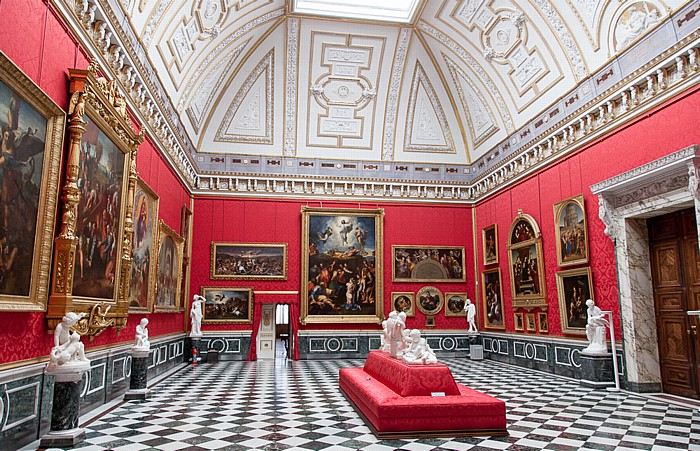
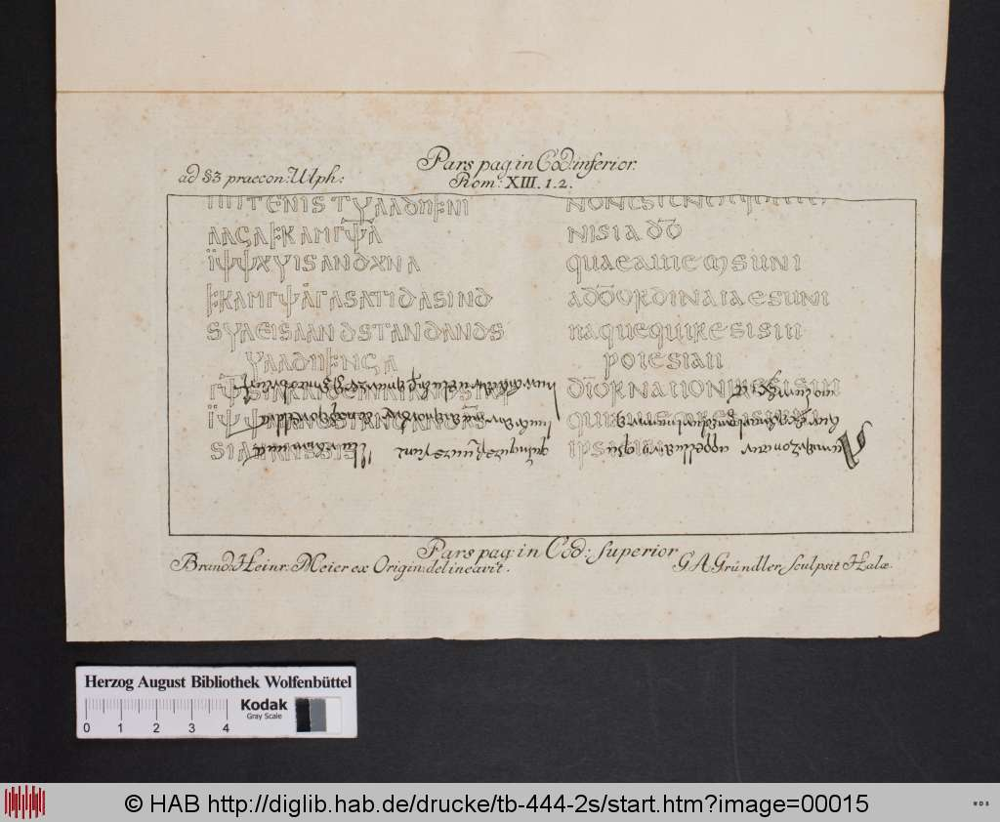
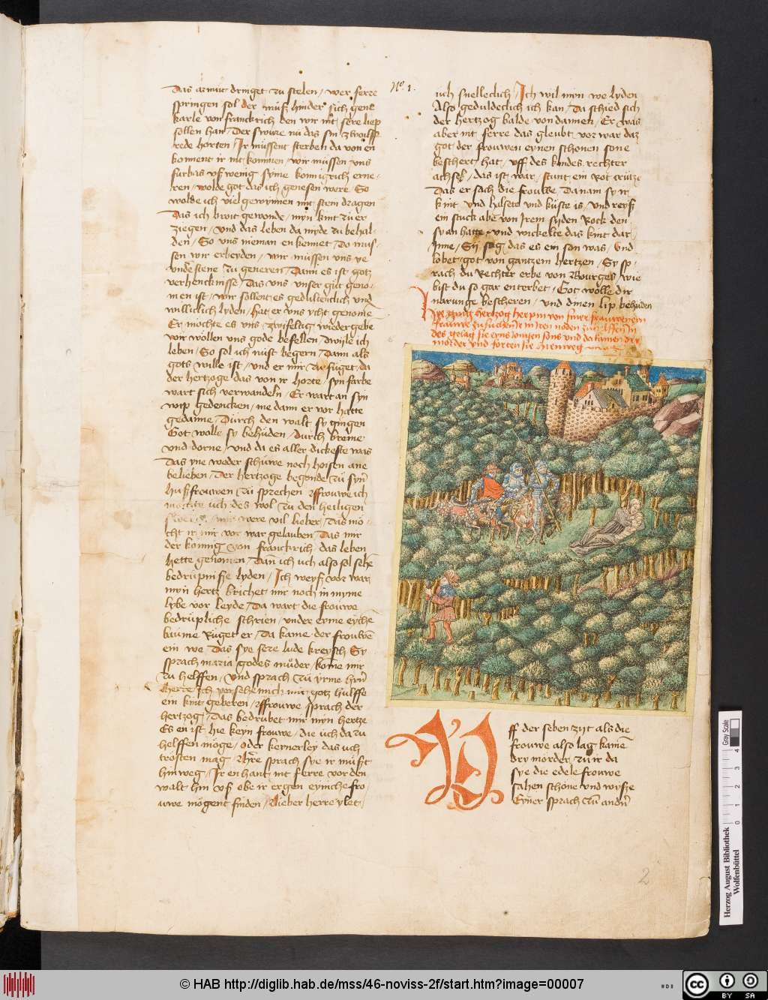
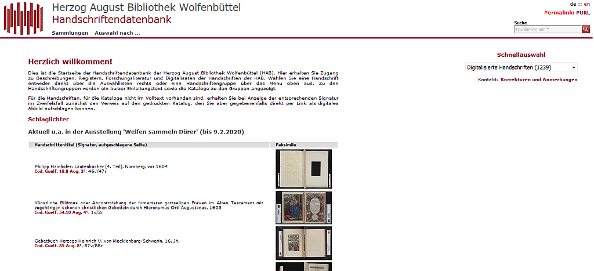

Fahrplan
- Handschriftenpräsentation in der Vergangenheit
- Projekte der HAB
- Neue Wege
- Fazit
Der Raffaelsaal im Orangerieschloss in Potsdam
F. A. Knittel: Ulphilae Versionem Gothicam ..., 1758
http://diglib.hab.de/drucke/tb-444-2s/start.htm?image=00015
Historia vom Herzog Herpin
http://diglib.hab.de/mss/46-noviss-2f/start.htm?image=00007
EHdLuMvE, Vorderdeckel
http://diglib.hab.de/mss/105-noviss-2f/start.htm?image=00001
Handschriftendatenbank, Startseite
Projekte der HAB
- Rekonstruktion und Erforschung niedersächsischer Klosterbibliotheken des späten Mittelalters (Handschriften)
- Kommentierte digitale Edition der Reise- und Sammlungsbeschreibungen Philipp Hainhofers (1578-1647) (Handschriften)
- Erschließung des Briefwechsels von Johann Valentin Andreae (1586-1654) (Handschriften)
- Digitalisierung der mittelalterlichen Handschriften der Ratsbücherei Lüneburg (Handschriften)
- Europeana regia (Handschriften)
- Handschriften aus dem deutschen Sprachraum - Ein Polonsky Foundation Digitalisierungsprojekt
- Handschriftenportal. Entwicklung eines zentralen Onlineportals für Erschließungs- und Bilddaten zu Buchhandschriften
Neue Wege (I): Workflows
- restauratorische Prüfung und begleitende Restaurierung
- Digitalisierung mit 600dpi
- Digitalisierung von Rücken und Schnitten
- Generierung von Kopien im Format JPG2000
- Festlegung des Publikationsvorgangs
Neue Wege (II): Metadaten
- Absprache mit Oxford
- Beschränkung auf Kernfelder → OCR-Kampagne
- Erhebung von Strukturdaten (Bild-Seiten-Konkordanz und "richtige" Strukturdaten)
- Anreicherung bestehender Metadaten
- Auslieferung über IIIF (JSON)
Neue Wege (III): Präsentation
Neue Wege (IV): Nutzung/Forschung
- ISMI International Standard Manuscript Identifier
- Annotation
- Mikro-Publikation → Zitierfähigkeit
<Ende/>